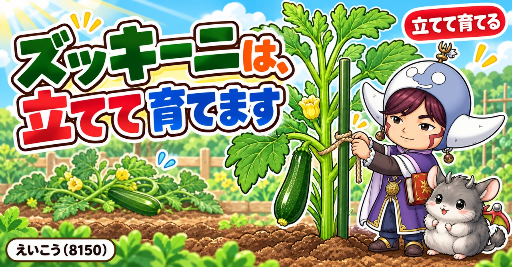
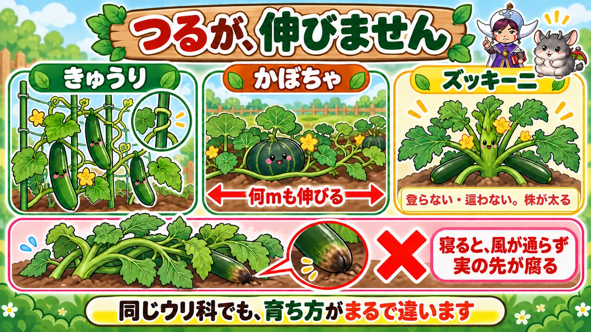
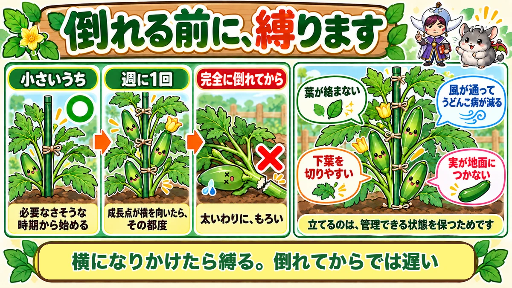
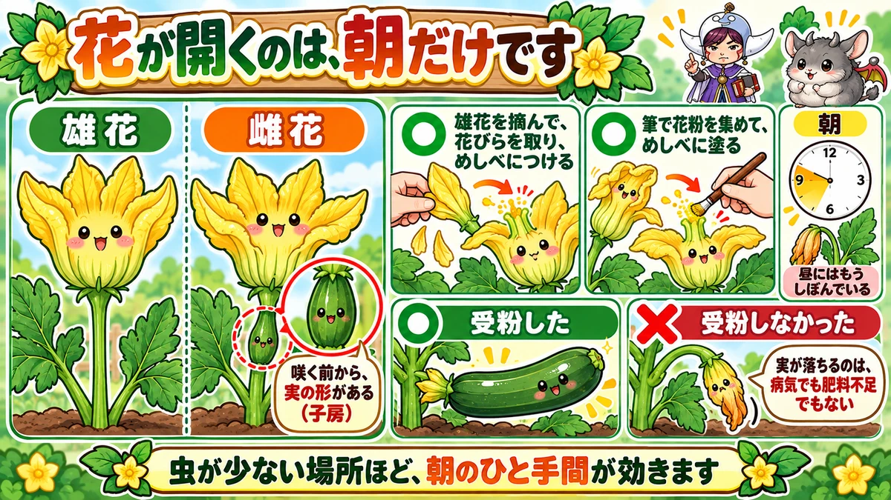

ズッキーニ栽培の調べもの帳｜植え時・受粉・支柱の選び方

どうも、8150（えいこう）です🌱 家庭菜園歴8年、理科の教員免許を持っていて、有機・無農薬で野菜を育てています。
📖 この記事の目次
この記事で分かること
- 最初に決めるのは、葉が広がる場所と、朝に花を見られるかです。苗を買う前に確認します。
- 株間は最低60cm、余裕があれば80cm〜1mを確保。株数を増やすために詰めません。
- 春の露地栽培は4月下旬〜5月を計画の出発点にし、実際の冷え込みで植え日を調整します。
- 支柱へ結ぶ方法も、横へ広がらせる方法もあります。どちらも収穫する手と風が入る空間を残します。
- 花の下の小さな膨らみだけでは、受粉の成功は分かりません。雄花・雌花の同時開花と、その後の実の育ちを確認します。
- 収穫や追肥は日付だけで決めず、実の大きさ、葉の状態、最初に入れた肥料の効く期間で判断します。
ズッキーニを植えるとき、つい苗の小ささを基準に場所を決めたくなります。でも、あとから大きな葉がぐっと広がります。ここを見込んでおくと、収穫のたびに葉と格闘せずに済むんですよね。
このページでは、苗や種を選ぶ段階から、実が太らないときの確認、収穫を終える判断までを順に調べられます。育て始めるみなさんは『早見』へ。すでに困っているなら『失敗の見分け方』へ進んでください。必要な作業をその都度選べば大丈夫です☺️
私がこの栽培で押さえたい軸は、『広さを先に用意して、花と葉の変化から作業を選ぶ』です。大きな葉を見て肥料を足す、小さい実を見て成功と思う、といった早合点を減らしていきましょう。
早見：ズッキーニの育て方（ひと目で分かる数字）
予定を立てるときの数字
- 野菜の仲間：ウリ科のかぼちゃの仲間です。きゅうりに似た実でも、同じようにネットへ伸ばす計画にはしません。
- 春の種まき：2月の加温育苗、3月の保温栽培という早出し案があります。温度管理を省きたい場合は苗から始めます。
- 春の植え付け：保温設備を使う3月下旬、条件の整った地域で4月上旬、5〜6月という説明が分かれています。露地の初心者向けには4月下旬〜5月を計画の目安とします。全国共通の適期ではありません。
- 冷え込みの確認：最低気温が10℃を下回りにくい条件で植えた例があります。5℃近くまで下がるなら待つという説明です。日中の暖かさだけで判断しません。
- 秋作：8月の種まき・植え付けという方法があります。冬まで採れる保証はなく、秋の気温と株の状態を見ます。
- 発芽の温度：25℃という説明があります。発芽後の生育には昼25℃以上、夜18℃以上を示す説明もありますが、一つの育苗案の条件です。
- 株と株の間：60cm〜1mと説明によって違います。60cmは最低限と考え、場所があれば80cm〜1m側を選びます。
- うね幅：ズッキーニに共通する確かな数値は、今回の材料にはありません。株間と、育った葉の外側に作業できる通路を合わせて設計します。
- 植える苗：本葉5枚くらいという説明があります。ただし材料の字幕に不鮮明な部分があり、枚数だけを絶対条件にはしません。
- 元肥の準備：有機肥料を使う案は植える2〜3週間前。分解を待つ計画として示されています。量は製品の表示で確認します。
- 追肥の開始：通常の元肥では植え付け約1か月後が一つの目安。実がつき始める時期と合わせます。
- 追肥の間隔：10日ごとの案、約1か月後に施す案、長く効く元肥で追加をほぼ省く案があります。異なる計画を全部重ねません。
- 肥料の持続：3〜4か月効くものを使う案と、約1か月効いてその後は追肥する案があります。どれを使ったかによって管理が変わります。
- 収穫開始：植えて約1か月〜1か月半の例があります。種まきからの日数ではなく、植え付けからの目安です。
- 収穫の寸法：細長型は長さ20cm前後、太さ3〜4cmという目安。丸型に長さ20cmを当てはめません。
- 連作の間隔：今回の材料ではズッキーニ固有の年数を確認できません。「同じ場所で問題ない」「何年休めばよい」とはここで決めません。
早見の数字は、みなさんの作業日を決める出発点です。例えば『植えて1か月』は収穫の気配を探す時期であり、その日に必ず食べられる実があるという約束ではありません。花がまだ咲かない株と、すでに実を伸ばしている株には、別の観察が必要です。
設備と地域で日付の読み方を変える
早出しの3月下旬という日付には、トンネルなどで低温を避ける条件がついています。5〜6月に植える案とは、スタート地点が違います。早い日付だけを取り出して露地へ移すと、保温の部分が抜け落ちます。
冷え込みが続く地域では、月が変わっても植え付けを急ぎません。暖かい地域でも、植えた直後に寒い夜が来るなら予定をずらします。苗が店頭にあることと、その場所で植えられることは、別に考えてください。
種から始める場合は、発芽させる温度だけでなく、発芽後に置く場所まで用意します。温かい場所で芽が出たあと、冷える場所へ移してしまえば、苗づくりの条件が変わります。早い収穫を目指すほど、ここに手間が必要になります。
数字を増やさず、記録を残す
- 苗札または種袋：形、色、地域向けの植え時、栽培条件を残します。
- 植え付け日：収穫開始の目安や、肥料の見直し時期を考える基準になります。
- 元肥の情報：製品の表示、施した日、実際の量を書きます。
- 開花と収穫：両方の花が咲いた日、実が伸びた日、採った大きさをメモします。
水やりの回数や追肥量に、材料にない数字を加える必要はありません。先に記録があると、『あれ、これって肥料が切れたんかな』と思ったときに確認できます。思い出そうとして畑で固まるより、メモを一つ見た方がラクです。
作業の手順（時期の順）
1．場所、株数、育てる形を先に決める
- 植える場所に、株間80cm〜1mを取れるかを確認します。難しい場合も最低60cmを確保し、通路を含めて見直します。
- 朝に見回れる日があるか、周囲で蜂などの虫を見かけるかを確認します。
- 花が同時に咲く機会を増やすために複数株を検討します。ただし広さを削って詰める案にはしません。
- 株を支柱へ結ぶか、横へ広がらせるかを決め、育った姿を想定して配置します。
- 春作をどこまで続けたいか、秋作を試すかを分け、苗の用意を計画します。
1株では絶対に採れない、という意味ではありません。同じ株でも雄花と雌花の開花が合い、花粉が届けば受粉は可能です。ただし花がそろわない日が続くと、人工授粉をしたくても花粉が用意できません。複数株は、この機会を増やすための選択です。
狭い場所に無理に2株を押し込むと、葉が重なり、花を探すこと自体が難しくなります。株数と作業のしやすさは一緒に考えたいです。場所の制約があるなら、1株の花を朝に観察するところから始めます。

この図では、実の見た目より株の育ち方に注目してください。ネットに絡む長いつるを期待せず、茎の周囲に広がる葉を収める場所を考えます。支柱を使っても、葉まで細い幅に収まるわけではありません。
2．形と作業のしやすさで苗・種を選ぶ
- 細長い緑、黄色、丸型のうち、収穫したい形を選びます。
- 苗札や種袋で、露地栽培への向き不向き、病気への強さ、トゲに関する表示を確認します。
- 苗から始めるか、種をまいて育苗するかを選びます。保温設備がない春の初挑戦には、苗から始める方が段取りを減らせます。
- 複数株を置ける場合は、同じ形でそろえるか、緑と黄色を組み合わせるかを検討します。
黄色と緑を合わせ、開花の機会を増やす案もあります。でも『黄色を植えないと受粉できない』ではありません。色の組み合わせは補助的な工夫で、実際に両方の花が咲くかが判断の中心です。
丸型も基本の栽培は同じ方向で進められます。違うのは収穫サイズの見方や料理に使う形です。細長型の物差しをそのまま持って来ないようにします。丸型の収穫量が少なめという評価はありますが、すべての品種や畑で同じ結果になるとは限りません。
3．土づくりと水の逃げ道を準備する
- 前作の残りを片づけ、雨のあとに水がたまる場所を確認します。
- うねと通路を決め、通路を水の出口として使えるかを見ます。
- 使う元肥の表示を読み、効く期間と施す時期を決めます。有機肥料を分解させる案では2〜3週間前に準備します。
- 地面がむき出しになる場所では、敷きわらなどで雨の泥はねを減らす方法を検討します。
- 肥料名、施した日、量を記録してから植え付けへ進みます。
元肥の量は、名前の似た別製品の数字で代用しません。材料には資材名や量の聞き取りが不鮮明な部分もあるため、ここでは1平方メートル当たりの量を作って示しません。みなさんが使う袋の表示と、実際に準備する面積を合わせてください。
雨の対策には、うね間に深さ約10cmの排水溝を設ける例があります。ただ溝を掘っただけで、水が行き止まりになれば逃げ道になりません。どちらへ流れるかまで確認します。雨よけを取り入れる案もありますが、ズッキーニ栽培で必ず必要な設備とはしません。
長く効く元肥は、忙しい時期の追肥を減らす選択肢です。使った場合も、葉の状態や排水を見なくてよいわけではありません。肥料の仕事を一つ減らした分、株の変化を見つける時間に回せるといいですね。
4．種から育てる場合は、発芽後まで見通す
- 温度を管理できる場所と、苗が大きくなっても置ける容器を用意します。
- 市販の培養土など、育苗に使える土を選びます。畑の土をそのままポットへ入れる方法は、水はけや虫・病気の面から避ける説明があります。
- ポットの土を縁まで詰めず、7〜8分目にして水がとどまる空間を残します。
- 一つのポットへ3〜4粒をまく案などを参考に、選んだ種の表示を確認してまきます。深すぎる穴にはしません。
- 発芽後は生育を見て間引き、最終的に1本を育てます。本葉何枚で必ず間引くという数字は、ここでは固定しません。
- 土が乾いたら、水を底まで行き渡らせます。毎日同じ量を足す作業にはしません。
2月の加温育苗は、早い収穫を目指す方法です。発芽適温25℃という説明に加え、発芽後も昼と夜の温度を管理する条件があります。『室内に置けば全部大丈夫』とは考えず、夜にどれくらい冷えるかも確かめます。
3月まきには、不織布とビニールトンネルを重ねる保温案があります。一方で、3月の屋外はトンネルだけでは不足し、ハウスがなければ待つという説明もあります。初めてで温度管理が難しいなら、早まきそのものを見送れます。早さを競わなくて大丈夫です。
種を埋める深さには、不鮮明な字幕を数値として採用できない箇所があります。そのため、種袋の表示を先に確認してください。聞き取りが曖昧な数字を、そのまま深い穴の指示へ変えないことが大切です。
5．冷え込みを確認して苗を植える
- 植える日の前後の最低気温を確認します。低温が続くなら、暦の予定より苗の置き場所を優先します。
- 株の位置を決め、植え穴と周囲の土へ先に水を行き渡らせます。
- 苗を植える際は、ポットの土の表面と周囲の地面を同じ高さに合わせます。深く埋めて固定する方法にはしません。
- 植えた株の周囲を確認し、倒れたときに通路や隣株へ入り込まないかを見直します。
- 株を立てる予定なら、まだ小さい段階で支える準備をします。
- 植え付け日を記録し、土の湿りと苗の様子を見て次の水やりを決めます。
前もって土へ水を入れるのは、植えたあとで表面だけ濡らすより、下まで湿らせるための工夫です。翌日に雨が降る状況なら、その雨を利用できる場合もあります。でも、雨予報が出たからといって、乾いた植え穴へそのまま苗を入れる話ではありません。
本葉5枚くらいという苗の説明はありますが、聞き取りに不鮮明な部分が残ります。葉の枚数だけをそろえるために、寒い日に植える必要はありません。苗の状態、植える場所の温度、用意した保温をセットにします。
6．支柱を使うなら、倒れ切る前から支える
- 株が小さいうちに支柱を用意し、茎を支える位置を決めます。
- 株を傷めないように支え、葉や花に手が届く形へ結びます。
- 生長に合わせて結ぶ位置を見直します。週1回ほど結び直す案がありますが、傾きや結び目もその都度確認します。
- 強く横へ寝た株を、まっすぐに戻そうとして無理に引き上げません。
- 収穫が進んだら下葉を整理し、支柱の周りに実が隠れていないか確かめます。
90cmの支柱が便利という例があります。倒れた方向を支える方法もありますが、どんな株でも起こせるという意味にはしません。茎の状態が違うので、持ち上げるなら静かに支えます。折れそうなら姿勢を変えることを優先しないでください。

この図は支柱を使う側の作業見本です。横へ広がらせる方法も選べます。支柱なしの場合は、株の倒れる先を空け、実や下葉へ近づける通路を維持します。結ぶ手間を減らす代わりに、横の場所を使う考え方です。
支柱があると、収穫や葉の整理をしやすくなる場合があります。ただし病気や実の傷みを完全に防ぐ設備ではありません。『立てたから安心』で終えず、風が通るか、実の先に傷みがないかも見ていきます。
7．開花したら、朝の受粉を確認する
- 花が開いている朝に、花の付け根を見ます。小さな実の形の膨らみがある花と、ない花を探します。
- 雄花と雌花が同じ日に開いているかを確認します。
- 虫が来るか、花のあとに実が伸びるかを観察します。
- 虫が少ない、しぼむ実が続くなどの場合は、開いている雄花から花粉を取り、雌花のめしべへつけます。
- その花の位置を覚えるか記録し、後日の大きさを見て作業の結果を確かめます。
花粉を移すには、雄花を摘んで花びらを除き、おしべを雌花へ触れさせる方法と、筆で花粉を移す方法があります。やりやすい方を選んでください。花粉のある雄花を見つけることが、道具を選ぶ前の条件です。
時刻の説明は、朝早くという案と午前中という案があります。時計の時刻を一律に決めるより、その花が開いているうちに進めます。昼に閉じた花を見てから、次の開いた朝へ予定を組み直しても大丈夫です。

自然に受粉できているなら、すべての花へ同じ作業を加える必要はありません。逆に防虫ネットを閉じている場合は、虫が花へ入れません。開花後も閉じるなら人工授粉を組み合わせるなど、虫よけと受粉の両方を考えます。
8．葉を整理し、虫と白い粉を探す
- 長袖と手袋でトゲに備え、収穫や葉の整理をする通り道を確認します。
- 下の葉から、黄変、枯れ、泥汚れ、病気が疑われる変化を探します。
- 収穫済みの実より下の葉や傷んだ葉を中心に取り除きます。元気な上葉をまとめて落とす方法にはしません。
- 病気が疑われる葉を株のすぐ近くへ積まず、畑の外へ持ち出して処分します。
- 葉の穴や虫も調べ、ウリハムシは動きの鈍い朝晩や曇りに取り除きます。
- 雨のあとには、土の水たまりと泥はねを確認します。
何枚切れば正解、という上限の数字は材料にありません。株が大きく見えるから全部すっきりさせようとせず、葉ごとに判断します。実や花を探せること、風が通ること、健全な葉が残ることを一緒に見てください。
ウリハムシは、オレンジ色の成虫が葉を食べるだけでなく、土に産卵し、幼虫が根などを傷めることがあります。小さな苗ほど葉を失った影響が大きいので、最初から点検します。昼に飛び回る虫を追いかけるより、動きの鈍い時間を選ぶ方が取りやすいです。
9．肥料の計画を、実のつき始めに見直す
- 植え付けからの期間と、元肥が効く期間を記録で確認します。
- 花が咲いているか、実が伸び始めたか、葉色や株の勢いに変化があるかを見ます。
- 通常の元肥で育てる場合は、植えて約1か月の追肥案を、実のつき始めと合わせて検討します。
- 追加するなら、株元へ密着させず、うねの肩など根が伸びる側へ施す方法を選びます。
- 量と次の時期は使う製品の表示に合わせ、施した分を記録します。
植え付け約1か月後に鶏ふんを両側へ施す説明がありますが、今回の材料では量を確定できません。別の説明の『一握り』や『30g』を、同じ肥料の量として足し合わせることはできません。肥料の種類も面積も違う可能性があるからです。
実がつく前に追肥すると、葉ばかり茂る可能性を挙げる案もあります。小さな実が伸びない原因を受粉で確認する前に、どんどん肥料を足す流れは避けます。長く効く元肥を使った株なら、追加をほぼ省く方法もあります。
10．実のサイズを見て収穫する
- 畑へ行くたびに、葉の下も含めて実を探します。
- 細長型は長さ20cm前後、太さ3〜4cmを目安に確認します。
- 丸型は丸型として大きさを見ます。ボールより少し小さいうちに採る案があります。
- 実の先のやわらかさ、傷み、変形を見て、健全な実の収穫へ進みます。
- 採ったあとに下葉と花の位置を見直し、次の実を見逃しにくい状態にします。
毎日何回、何日おきといった共通の頻度は材料にはありません。収穫開始の目安に入ったら、見回りのときにサイズを確認する習慣をつけます。葉が茂ったあとほど、正面から見える実だけでは足りません。
少し大きく育っても食べられるという説明があります。20cmを超えたら即失敗、ではないんですよね。一方、秋作で先端が傷みやすく、小さめで採る案もあります。寸法だけを達成するために傷んでいく実を待たないようにします。
11．株の勢いを見て春作の終了・秋作を選ぶ
- 下葉の傷み、うどんこ病の広がり、新しい花と実の勢いを確認します。
- 収穫を続ける手間と、次に場所を使う予定を合わせます。
- 春の早出しを短期間で終えるか、健全な株を管理して採り続けるかを選びます。
- 秋作を試すなら、8月の種まき・植え付けを別の計画として用意します。
- 片づけの際は病葉を周囲へ残さず、同じ場所へ何を植えるかは別に確認します。
早出しをして、なすやきゅうりが本格的に採れる頃に片づける方法があります。株の巨大化と病気が増える前に終える考え方です。長く採ることだけが上手な栽培の証拠、とはしなくていいです。
秋作は、垂直に支え、下葉を整理して長く収穫する試みがあります。ただし『冬まで採れる』という確定した結末は材料にありません。始める時期と終わる時期をセットで見て、花や実が育ちにくくなったら見直します。
失敗の見分け方（症状→原因→やること）
花の下に実があるのに、伸びない
- 症状：小さな実の形はあるのに大きさが変わらず、しぼんで終わります。
- 考えられる原因：受粉が成立していない可能性があります。雄花と雌花の開花がずれる、虫が来ない、低温が続く、といった条件を確認します。
- やること：開いている朝の花を見て、両方の花がそろう日を探します。花粉が取れるなら人工授粉を行い、その実の変化を追います。
確認したいのは、『実らしい形が見えた』と『受粉後に成長した』の違いです。写真を残せるなら、花が咲いた日と後日の同じ実を見比べてください。見た目の印象だけより判断しやすくなります。
この段階で、すぐ肥料不足と決めて追肥しません。花粉が届かなかった問題は、肥料を追加する作業では埋められないからです。受粉を試しても改善しない場合は、花の条件だけでなく株全体の勢いと土の状態も見直します。
雄花だけ、または雌花だけが開く
- 症状：開花しているのに、同じ朝にもう一方の花が見つかりません。
- 考えられる原因：開花のタイミングが合っていない可能性があります。1株では両方がそろう機会を確保しにくい場合があります。
- やること：株ごとに花を探し、複数株ならほかの株の雄花も確認します。置ける株を増やすかは、必要な広さを取れる場合に検討します。
雌花だけの日に、めしべを筆で触っても、それだけでは花粉を届けたことになりません。道具を動かしたかより、雄花から花粉を移せたかを見ます。作業ができない朝もありますが、それを株全体の失敗と決めなくて大丈夫です。
実の先端がやわらかく傷む
- 症状：実の先がへたる、やわらかい部分ができるなど、健全な実と違う変化が見られます。
- 考えられる原因：材料には秋作で先端が傷んだ例があります。ただし採り遅れ、地面への接触、葉の混み合いのどれか一つを原因と確定できません。
- やること：受粉後に実が伸びていたか、地面につく位置か、周囲に風が通るかを確認します。傷みやすい株では小さめの収穫を検討し、下葉と排水を見直します。
株を立てると先端の傷みを減らせるという説明はありますが、完全に防げるとはしません。立てた株にも傷みが続くなら、支柱の有無だけで診断を終えないでください。
『小さいまましぼむ』と『伸びた実の先が傷む』を分けて記録すると、受粉の問題を先に見るべきか、実の置かれた環境を見直すべきかが整理できます。どちらも「実が腐った」の一言でまとめると、対策が選びにくくなります。
葉に白い粉のようなものが広がる
- 症状：葉の表面に粉をまぶしたような白さがあり、広がりや株の弱りが見られます。
- 考えられる原因：うどんこ病が候補です。ただし葉にもともとある白い模様との確実な判別方法は、今回の材料だけでは示せません。
- やること：新しく出た白さか、範囲が増えているかを観察します。病気が疑われる葉と黄変した下葉を整理し、周囲に放置せず、風通しと排水も確認します。
白い場所を一つ見つけたからといって、元気な葉を全部切らないようにします。過去の葉の写真や、新しい葉との比較が役立ちます。判断が難しい場合は、写真を持って地域の栽培相談などで確認してください。
このページでは薬剤名や家庭で作る散布液を中心にしません。まずは、発見が遅れて病葉が増えること、葉が混み合うこと、取り除いた葉を近くへ積むことを見直します。株の勢いが落ち、広がりが続くなら収穫終了も候補に入れます。
葉に丸い食べ跡が増える
- 症状：丸い食べ跡や穴があり、オレンジ色の虫を見かけます。
- 考えられる原因：ウリハムシによる食害が候補です。葉の穴だけで虫を特定せず、実際の虫も探します。
- やること：朝晩や曇りなど、動きが鈍いときに取り除きます。小苗期は防虫ネットを検討し、開花したら受粉と両立させます。
苗が小さいころは、葉を少し失っただけでも影響が大きくなります。大株の葉の穴と同じ感覚で後回しにしないことが大切です。葉を調べるついでに、株元や土の状態も見ます。
銀色の資材で初期被害を減らす工夫はありますが、虫が一匹も来なくなる保証はありません。葉が地面を覆えば、反射する面も見えにくくなります。資材を設置したあとも、成虫の確認と除去を続けます。
昼にしおれ、夕方は元気に見える
- 症状：昼間に葉がしおれ、夕方には回復したように見えます。
- 考えられる原因：乾きや根の不調などを考えます。ウリハムシ幼虫による根の被害も候補ですが、この症状だけで特定はできません。
- やること：土の乾き、水たまり、葉の食べ跡、株元の様子を合わせて確認します。水を足す前に、すでに湿りすぎていないかを見ます。
夕方に戻るから問題なし、と決めないようにします。一方で、しおれを見ただけで幼虫被害とも言い切れません。いつしおれるかを記録し、同じ場所の土が乾くのか、水が逃げないのかを先に整理します。
根に問題がある状態では、地上の葉へ水や肥料を足す判断だけでは足りません。葉に症状が出ていても、確かめる場所は地下側にある場合があります。見えた症状から一段下を見るのがコツです。
葉色が薄い、株の伸びが止まる
- 症状：以前より葉色が薄く見える、新しい葉や実の育ちが弱くなります。
- 考えられる原因：肥料の効きが変わった可能性があります。低温や排水不良など、根や生育環境の問題も先に確認します。
- やること：元肥の種類と施した日、実のつき始め、土の湿りを見ます。通常の元肥か、長く効くものかを区別してから追肥を判断します。
ここで必要なのは、肥料の袋を見直すことです。別の栽培法で「10日ごと」と書かれているからといって、まだ効いている元肥へ追加するとは限りません。株の変化と使った肥料を結びつけます。
植えて間もない低温の株と、収穫が続いたあとの株では見直す順番が変わります。前者は冷え込みを、後者は肥料の持続と株の消耗を確認するなど、いつからの症状かも診断に入れてください。
株が倒れ、通路をふさぐ
- 症状：茎が横へ傾き、実を探す場所や通り道が葉に覆われます。
- 考えられる原因：横へ広がる株の性質に対して、場所や仕立て方の準備が不足している可能性があります。
- やること：支柱仕立てなら、無理に起こさず今の姿勢で支えられるか確認します。支柱なしなら、通路の取り方と下葉を整理します。
完全に寝た茎を一気に持ち上げると、折れる危険があります。姿勢を直すことだけを目標にしないでください。いまの株に近づける場所を作り、実や花を見られるようにする方が先です。
次の作では、倒れた後の調整を減らすために、株間と支柱の有無を植える前に決めます。今回困った場所をメモしておくと、同じ畑でも配置を変えられます。失敗の記録って、次の場所決めにめっちゃ使えるんですよね。
説明が分かれていること
早植えするか、暖かくなるまで待つか
- Aという説明：加温育苗を2月に始め、3月下旬にトンネル内へ植える早出し案があります。3月まきで保温を重ねる案もあります。
- Bという説明：3月の露地植えを避け、ハウスがなければ4月まで待つ案や、5〜6月に植える案があります。
- どう考えればよいか：違うのは、低温を避ける設備と植える場所の条件です。露地で始める初心者向けの4月下旬〜5月は、複数の説明から組み立てた計画の目安です。
これらは動画の栽培例を整理した日付で、種袋が一律に指定した適期ではありません。みなさんの品種の表示、地域の最低気温、保温できる範囲を合わせます。早い例があるから、後から植えるのは遅すぎるという読み方をしないでください。
株間60cmか、80cm〜1mか
- Aという説明：最低60cmを取る、あるいは60〜80cmの範囲で考える説明があります。
- Bという説明：80cm〜1mを空ける説明があります。60cmはきつめとして、実際に80cmを選んだ例もあります。
- どう考えればよいか：数字の共通点は『密に植えない』です。場所があるなら広い側を選び、通路も含めて確保します。
株間は苗の茎同士の間隔です。それだけ空ければ葉の先まで通路になるわけではありません。横に倒して育てる場合は倒れる先も考え、立てる場合でも左右に葉が張り出す場所を残します。
支柱を使うか、使わないか
- Aという説明：小さいうちから支柱へ結び、育つたびに位置を調整して垂直に保ちます。下葉の整理や受粉、収穫をしやすくする方法です。
- Bという説明：支柱を立てず、株が自然に横へ倒れる形で育てます。誘引の作業を減らす考え方です。
- どう考えればよいか：通路を空けたい場所や、実に手を伸ばしやすくしたい場合は支柱を検討します。十分な横幅があるなら支柱なしも選べます。
葉柄を少し残して株を支える案もありますが、材料では試験中の工夫です。確立した必須作業として採用しません。支柱なしを選んでも、病葉の整理や実の点検まで省く話ではありません。
図解は支柱を使う方法の理解に役立ちます。一つの方法を描いた図なので、『立てない栽培は間違い』と読む必要はないです。みなさんの場所に合う方を、作業に入る前に選びます。
人工授粉するか、自然に任せるか
- Aという説明：朝に雄花の花粉を雌花へ移し、実の成長を助ける方法がすすめられています。
- Bという説明：人工授粉をせず、自然に受粉した実を収穫できた例があります。
- どう考えればよいか：虫が花を訪れ、両方の花が同時に開くなら自然受粉も期待できます。虫が少ない、花の後にしぼむ実が続く場合は人工授粉を加えます。
両方の方法に共通して必要なのは、花粉が届くことです。自分で作業しない方法も、受粉が不要な方法という意味ではありません。実が伸びているかを見て選びます。
作業時刻の『朝早く』『午前中』という説明にも幅があります。材料の動画で使われた時刻の言い方が違うため、何時を境目とするかは固定しません。開いている花を確認することを優先します。
追肥するか、元肥でまかなうか
- Aという説明：植え付け約1か月後の追肥を組み込む案があります。生育の早いウリ科で10日ごとに施す案もあります。
- Bという説明：3〜4か月ほど効く元肥を使い、追加の肥料をほぼ省く方法があります。
- どう考えればよいか：効く期間が違う肥料を使った栽培例です。先に元肥の情報を確認し、その計画に合う追加だけを考えます。
動画の実例にある回数を、みなさんの袋に書かれた使い方より優先しません。『約1か月後に1回』と『10日ごと』を足して、両方施す必要もありません。花や実の状態、葉色、排水も見て判断します。
追肥量には30gという夏野菜共通の例もありますが、ズッキーニの全製品共通量としては使えません。種類が不鮮明な肥料の『一握り』も、別の肥料へ置き換えません。この章は回数だけを取り出さず、使ったものとセットで比べるための場所です。
小さめに採るか、好みのサイズまで育てるか
- Aという説明：細長型を長さ20cm、太さ3〜4cmほどで採る、寸法のはっきりした目安があります。
- Bという説明：小さめを好みつつ、少し大きくなっても味や種はそれほど気にならないという説明があります。
- どう考えればよいか：最初は20cm前後を確認の基準にします。大きくなった実を、それだけで食べられないとは判断しません。
これは動画で示された収穫例と好みの違いです。丸型へは別の目安を使います。秋作のように先端が傷みやすい条件では、寸法を待つより小さめに採る方法を選ぶ余地があります。
品種の違いを重く見るか、基本の栽培を優先するか
- Aという説明：品種による違いはあまり大きくない、基本の栽培は共通するという説明があります。
- Bという説明：トゲの少なさや耐病性を見て選ぶ案があります。形による収穫量の違いを挙げる評価もあります。
- どう考えればよいか：作業の順は共通しても、手の入れやすさや病気の出やすさに違いがあります。品種名の評判だけでなく、札に書かれた性質を確認します。
黄色が多く採れた例を、黄色ならどこでも多収という結論にはしません。緑と黄色で味が大きく変わらないという意見もあります。食べたい形、植える場所、扱いやすさを分けて選ぶ方が迷いにくいです。
春を短期で終えるか、秋作を長く管理するか
- Aという説明：春に早く始め、ほかの夏野菜が採れる頃に撤去する短期型があります。株が大きくなり、病気が増える前に区切ります。
- Bという説明：8月からの秋作を立てて管理し、長い収穫を試す方法があります。
- どう考えればよいか：収穫したい時期と管理に使える時間が違います。どちらも、弱った株を目的なく残し続ける方法にはしません。
秋作で冬まで採る試みは、材料では最終結果が確定していません。春作と秋作をつなげれば一年中採れる、という保証にはできません。終わりは花、実、病葉の様子を見て決めます。
うどんこ病の時期を何月まで見るか
- Aという説明：発生を警戒する期間を5〜11月とする説明があります。
- Bという説明：5〜10月とする説明があります。雨の後に広がる話と、乾燥や株の弱りに注目する話もあります。
- どう考えればよいか：共通する春後半〜秋は葉を継続して点検します。月が変わったことだけで観察をやめず、実際の白さや株の勢いを見ます。
病気の時期は地域と気象でも変わります。雨だけ、乾燥だけを一つの原因にして安心せず、下葉の混み合いと排水を整えます。暦の範囲は見回りを始める手がかりであり、病気が出ない日付の保証ではありません。
よくある質問
1株しか置けなくても育てられますか
同じ株に雄花と雌花がそろい、花粉が届けば実を育てられます。
複数株は同時に花が開く機会を増やす工夫です。
無理に狭く植えるより、1株の花と受粉後の変化を確認してください。
支柱なしは失敗する育て方ですか
支柱を使わない方法もあります。
横へ倒れる先と、葉が広がる場所を確保することが条件です。
下葉の整理や実の確認ができる通路は残します。
支柱を使えば株間を狭くできますか
株を立てても大きな葉は左右に広がります。
株間を省略できる方法としては扱いません。
最低60cm、余裕があれば80cm〜1mを取る計画から始めます。
花の下に小さい実があれば収穫できますか
その膨らみは、花が開く前からある子房です。
受粉できた証拠ではないので、後から実が伸びるかを見ます。
小さいまま終わる場合は、同時開花と花粉の届き方を確認します。
昼しか畑へ行けないときはどうしますか
虫が来て自然受粉し、実が伸びているかを確認します。
人工授粉を加えたい場合は、花の開いている朝に行ける日を作ります。
閉じた花への昼の作業だけで、朝の受粉を代用する案は材料にありません。
防虫ネットは収穫まで閉じたままでよいですか
閉じたままだと、受粉を助ける虫も花へ入れません。
開花期には開けるか、人工授粉を組み合わせるかを考えます。
初期の虫よけと、開花後の受粉を分けて計画してください。
黄色と緑を一緒に植えなければいけませんか
色の組み合わせは必須ではありません。
開花の多い黄色を利用する案はありますが、目的は同時開花の機会を増やすことです。
どの色でも、実際に雄花と雌花が開くかを見ます。
プランターの大きさはどれくらい必要ですか
今回の材料には、ズッキーニ向けの容器容量や寸法を確定できる情報がありません。
葉が広がる場所、排水、朝の花の点検は、容器栽培でも確認したい点です。
具体的な容量は、選んだ品種の案内などで別に確かめてから用意してください。
植えて1か月なのに採れないのは失敗ですか
約1か月〜1か月半は、収穫が始まった例の目安です。
開花しているか、両方の花がそろうか、実が伸びるかで段階を確かめます。
日数だけで失敗とせず、低温や受粉の条件も見直します。
水は毎日やればよいですか
回数を固定せず、土の乾きと水たまりを見ます。
育苗では、乾いたときに底まで水を行き渡らせる方法です。
畑の1株当たり何リットル、何日ごとという共通値は、材料にありません。
花が咲いたらすぐ追肥しますか
花の有無だけでは決めず、元肥が効く期間と実のつき始めを確認します。
通常の元肥で約1か月後から見直す案と、長く効く元肥でほぼ省く案があります。
選んだ肥料の表示量と使い方を基準にしてください。
白い葉は全部切ってもよいですか
白さだけで病葉と決めず、粉状の広がりや葉の変化を見ます。
材料だけでは、元の白い模様との確実な見分け方は示せません。
傷んだ下葉を中心に整理し、健全な上葉を大量に切る方法にはしません。
20cmを超えた実は食べられませんか
20cm前後は細長型を採る一つの目安です。
少し大きくしても食べられるという説明もあります。
サイズだけで捨てる判断をせず、先端の傷みや健全さも確認します。
丸型も長さ20cmで採りますか
細長型の長さの目安は、丸型へそのまま使いません。
丸型には、ボールより少し小さめで収穫する案があります。
選んだ品種の収穫の案内と、実の育ち方を合わせて見ます。
何日くらい保存できますか
今回の材料には、保存温度や日数を裏づける説明がありません。
冷蔵・常温の日数や冷凍手順は、ここで推測して示しません。
収穫サイズを確認し、料理へ回す予定も合わせておきます。
同じうねで続けて育てても大丈夫ですか
今回の材料では、ズッキーニ固有の連作可否と休ませる年数を確認できません。
同じウリ科の別作物の年数を、そのまま借りることはしません。
前作や病気の履歴を残し、地域の栽培資料などで別に確認します。
8月にまけば冬まで収穫できますか
8月から始める秋作の方法はありますが、冬までの収穫は保証できません。
花と実の育ち、病葉、地域の冷え込みを見て終了を決めます。
春作と秋作は、それぞれの条件で計画してください。
学ぶ：ズッキーニの花と実のしくみ🔬
小さなズッキーニの形は、花の構造の一部
雌花の付け根には、開花前から実に似た膨らみがあります。この部分を子房（しぼう）と呼びます。めしべの根元にあり、実へ育つ部分です。だから、まだ花粉が届いていなくても、ズッキーニらしい形を観察できます。
雄花には同じ膨らみがなく、花粉を作るおしべがあります。花びらの大きさだけで雄花と雌花を判断しようとせず、まず付け根を見ると役割が分かりやすくなります。立派な花があることと、実になる部分があることを分けて見られます。
畑で確かめるなら、開いた花だけでなく、これから咲くつぼみも比べてください。『花の下が細いもの』『すでに実に似たもの』を見つけると、名前を丸暗記するより覚えやすいです。見て分かる違いから入ると、理科の話も身近になりますね🔬
受粉は花粉が届くこと、実の成長はその後の変化
受粉は、雄花の花粉が雌花のめしべの先へ届くことです。花粉が届いたあとに植物の中で次の過程が進み、子房が実として育つことにつながります。外から見える膨らみだけで、その過程が済んだとは言えません。
人工授粉は、花粉を運ぶ部分を人が助ける作業です。筆を使えば実を大きくする成分が出る、という働きではありません。雄花から取った花粉をめしべへ届けることが目的です。
自然受粉も人工授粉も、花粉が移るという点は共通しています。蜂などが運んだか、人が運んだかの違いです。自然受粉の株が実を伸ばしているなら、人が触れていないことを失敗の理由にはできません。
作業をしたあとも、同じ実が伸びるかを確認します。花粉を移した日、後日のサイズ、しぼんだかどうかを合わせると、『作業したから成功』ではなく『実の変化を見て成功を確かめる』という観察になります。
複数株の意味は、花の時間を合わせやすくすること
ズッキーニは、一つの株に雄花と雌花をつけます。ただ、どの朝にも両方がそろうとは限りません。雌花が開いた日に雄花がなければ、その場で人工授粉したいと思っても花粉を用意できないわけです。
そこで、ほかの株の花も利用できるように複数株を植える考え方があります。株数を増やす目的は、花粉を出す花と受け取る花が開く機会を増やすことです。『1株には雄花しかない』『もう1株が必ず雌花担当』という分担ではありません。
黄色と緑を組み合わせる工夫も、色そのものが受粉を成立させるわけではありません。開花の多さやタイミングを利用する案です。色をそろえたかより、いま開いている花の種類を見る方が、今日の作業に直結します。
防虫ネットは、入ってほしくない虫も、必要な虫も止める
防虫ネットは、苗へ虫が近づくのを物理的に妨げる道具です。植物の側から『この虫だけ通して』と選ぶことはできません。開花期まで閉じたままなら、花粉を運ぶ虫も入れなくなります。
そのため、小苗を守る時期と、花粉を届けたい時期で使い方を変えます。ネットを開ける選択と、人工授粉を組み合わせる選択があります。虫よけがうまくできたことと、受粉がうまくできたことは別に確認します。
これは家庭菜園の道具を考えるときに役立つ見方です。何を防ぐかだけでなく、同時に何が入れなくなるかを見ます。ズッキーニなら花と虫の関係を見るだけで、その意味を実物で確かめられます。
大きな葉を残す仕事と、下葉を外す仕事
健全な葉は、光を受けて株の生長を支える働きをします。一方、黄変して傷んだ葉や病葉は、同じ状態で働き続けるわけではありません。葉の大きさだけでなく、その葉がいまどんな状態かを見る必要があります。
下葉を外す作業には、花や実が見えるようにする、空気が通る空間を作る、傷んだ葉を株の近くに残さない、という役割があります。『葉を切れば切るほど実へ力が回る』と単純に考えて、上の元気な葉まで減らす方法にはしません。
葉が重なった株では、地面に近い実を見落としやすくなります。そこで収穫済みの実より下や、傷んだ部分を中心に整理します。葉の整理は病気への対策だけでなく、みなさんの観察をしやすくする作業でもあります。
支柱で株を立てる方法は、この観察する空間を作りやすくする工夫です。支柱自体が光合成を増やしたり、病原菌を取り除いたりするわけではありません。形を変えて、次の手入れを行いやすくする働きとして捉えます。
根に必要なのは、水があることと、たまり続けないこと
水が少なすぎれば、葉の張りや生長に影響します。反対に水がたまり続けると、根の働きを損なうことがあります。『しおれたから水を足す』と決める前に、土が乾いているかを確認するのはこのためです。
育苗の水やりで、乾いたら底まで湿らせることと、いつも湿ったままにすることは違います。水が届く深さを考える一方、次に与えるタイミングでは乾きを見ます。ポットの表面だけでなく、容器全体の湿りも意識したいです。
畑の排水では、うねの上が濡れたかだけでなく、余った水がどこへ行くかを見ます。通路に長く水が残るなら、そこで流れが止まっていないかを確認します。肥料がある土でも、根が不調なら、足した量だけで生長は決まりません。
観察を一つの流れにつなげる
- 開花前：付け根の形を比べ、雄花と雌花の違いを見ます。
- 開花した朝：両方がそろっているか、虫が来ているかを見ます。
- 受粉を助けた後：花のあった実が伸びるかを確かめます。
- 収穫の頃：葉の下まで探し、実の大きさと先端の状態を見ます。
- 株が大きくなった頃：下葉、通路、白い粉、土の水たまりを確認します。
この順で追うと、小さい実を見てすぐ安心したり、伸びない実を見てすぐ追肥したりする判断を減らせます。今日は、雄花と雌花の付け根を見比べるだけでも十分です。何が違うかが見えると、次に花が開く朝がちょっと楽しみになるかなと思います。
まとめ
ズッキーニの計画は、『株が広がる場所』『朝の花』『元肥の効く期間』から始めると整理できます。植える日や支柱の有無には違う説明がありますが、その方法が使われた条件まで見ると、自分の場所へ取り入れやすくなります。
これから始めるみなさんは、次の順で用意してください。
- 株間と通路を取り、支柱へ結ぶか横へ広がらせるかを選ぶ
- 地域の最低気温と苗札・種袋を確認して、苗か種かを決める
- 排水と泥はねへの対策を考え、元肥の表示と施した日を記録する
- 虫よけを使う場合も、開花後の受粉をどうするか決めておく
育っている株に困ったときは、見える場所を分けます。
- 小さな実が伸びないなら、花が開いた朝の雄花と雌花、虫の訪問を確認します。
- 実の先が傷むなら、受粉後の育ち、地面との接触、葉の混み合いを見ます。
- 葉の白さや穴は、広がり方と実際の虫を調べ、病葉の整理や虫の除去へ進みます。
- 株の勢いが落ちたら、追肥する前に元肥の情報、土の湿り、冷え込みを見直します。
収穫開始の約1か月〜1か月半や、細長型の20cm前後は、確認を始めるための目安です。日数が来たら成功、サイズが少し違えば失敗、と判定する数字ではありません。丸型には丸型の見方を、秋作には秋作の気温と傷み方を合わせます。
支柱なしでも育てられますし、自然に受粉して採れる場合もあります。みなさんが続けやすい方法を選び、花と実の変化から足りない作業を加えてください。最初から全部の手間を盛り込むより、必要なところが分かると動きやすいです。
今日の確認を一つに絞るなら、これから植える場所では株間を測る、開花している株では花の付け根を見る、のどちらかです。実物を見て「ここが変わってきたな」と気づけると、栽培の判断も少しずつつながってくるかなと思います☺️
ズッキーニのタネ
かぼちゃの仲間ですが、つるが伸びずに立ち上がります。場所を取らないので少ない畑向きです。
![[商品価格に関しましては、リンクが作成された時点と現時点で情報が変更されている場合がございます。]](https://hbb.afl.rakuten.co.jp/hgb/552615f0.9cc2855e.552615f1.776f7de9/?me_id=1251188&item_id=10003222&pc=https%3A%2F%2Fthumbnail.image.rakuten.co.jp%2F%400_mall%2Fyonezawa%2Fcabinet%2Ftane01%2F1017makuwa%2Fakizucch.jpg%3F_ex%3D240x240&s=240x240&t=picttext "[商品価格に関しましては、リンクが作成された時点と現時点で情報が変更されている場合がございます。]")

支柱150cm
放っておくと自分の重さで倒れます。小さいうちから立てて縛るのがコツです。
![[商品価格に関しましては、リンクが作成された時点と現時点で情報が変更されている場合がございます。]](https://hbb.afl.rakuten.co.jp/hgb/56d221a0.da732c49.56d221a1.b57a6709/?me_id=1230952&item_id=10017113&pc=https%3A%2F%2Fthumbnail.image.rakuten.co.jp%2F%400_mall%2Fnou-nou%2Fcabinet%2F5010356000109-01.jpg%3F_ex%3D240x240&s=240x240&t=picttext "[商品価格に関しましては、リンクが作成された時点と現時点で情報が変更されている場合がございます。]")
誘引クリップ
茎が太いので、ひもだと食い込みます。クリップだと締めすぎません。

あわせて読みたい